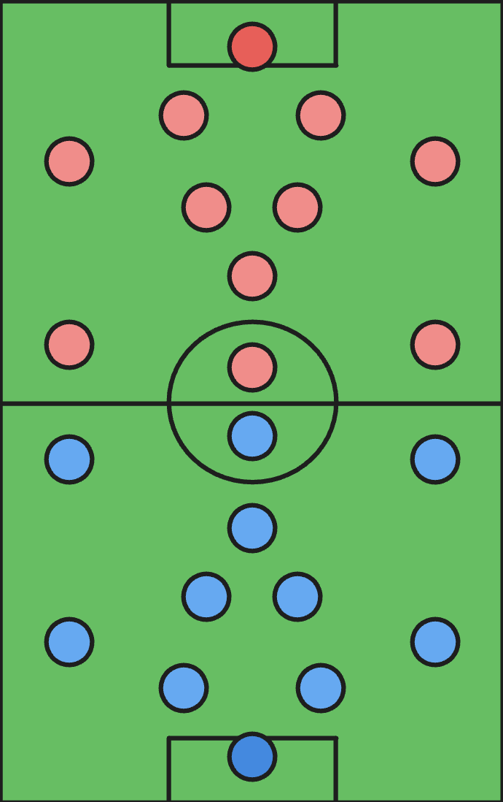
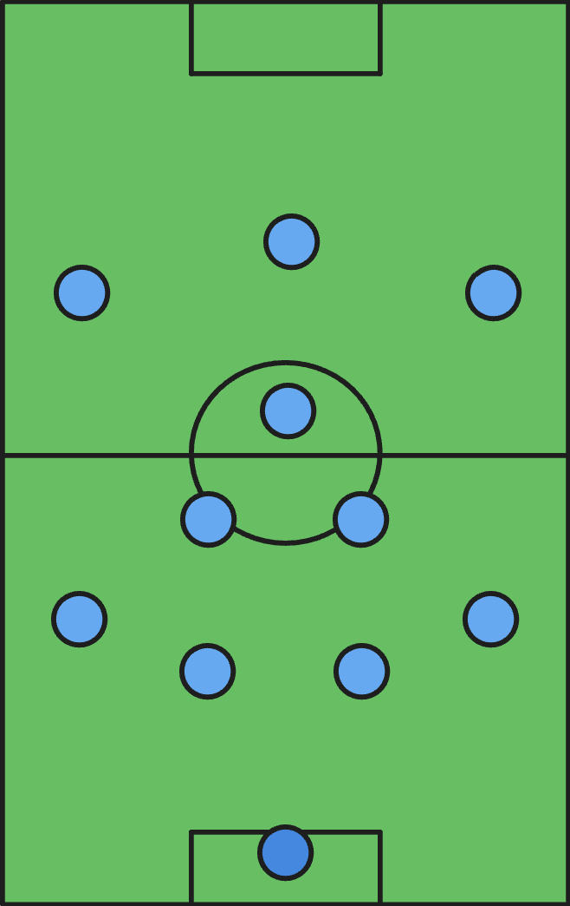

How to Play Soccer
The official game is played on a soccer field that is about
100-120 yards long and around 70 yards wide. Players cannot touch
the ball with their hands (with the exception of the goalkeeper
position) and must put the ball into the opposing team's net.
The game is split into two 45 minute halves, and whoever scores
the most goals by the end of the 90 minutes wins the game.
That's the general structure of the game. There are many more
rules, but these are the most important ones to know to follow the
game.

Positions
Like most team sports, there are positions on the field to organize players. There are 11 players on the field, 1 goalkeeper, 10 field players

Goalkeeper
The goalkeeper is the only player allowed to touch the ball with their hands...

Defenders
Defenders are positioned lower and focus on stopping opposition attacks...

Midfielders
Midfielders link the defense and attack, helping control the game's flow...

Forwards
Forwards are goal-scorers, often the fastest and most creative players...

Formations
Formations are the way the players are positioned on the field.
There are many different formations, each with their own strengths
and weaknesses. Choosing a formation depends on the tactics the
team want to use.
This formation is a 4-3-3, where there are 4 defenders, 3 midfielders,
and 3 forwards (we typically leave the keeper out of the formation).
The 4-3-3 is one of the most popular formations in today's modern game.